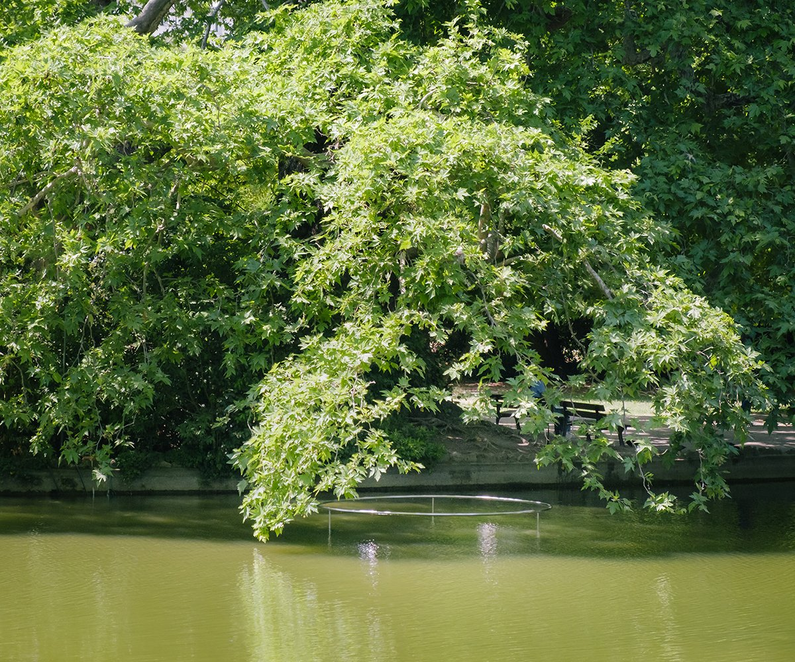
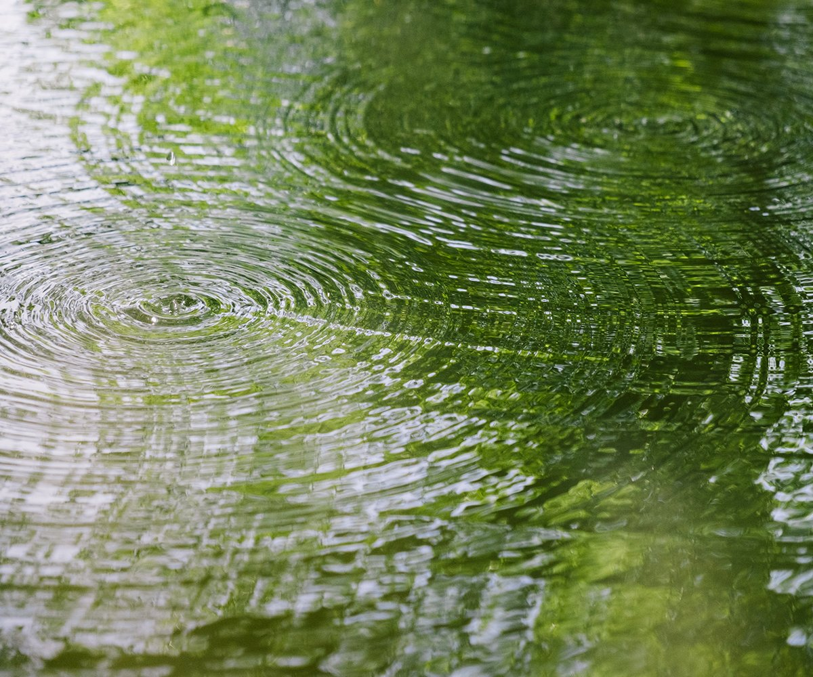
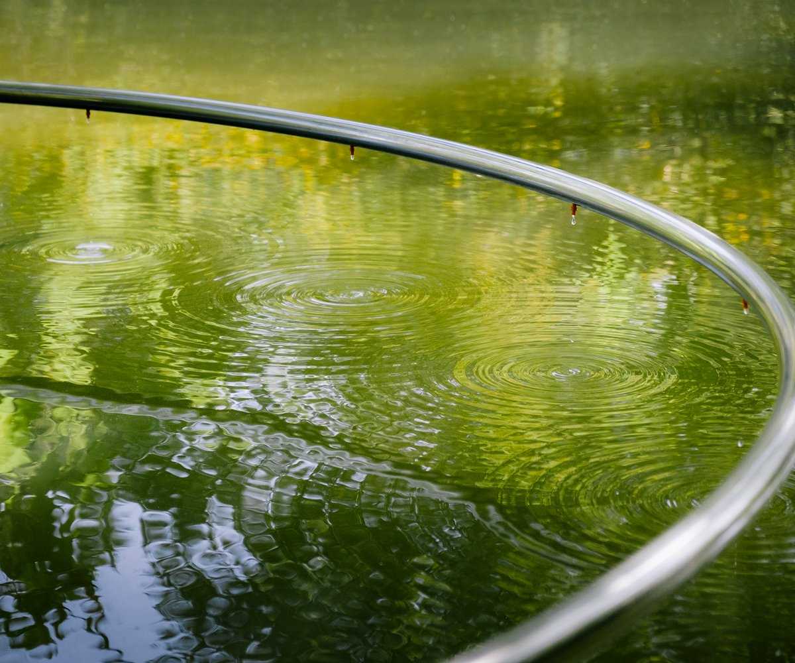
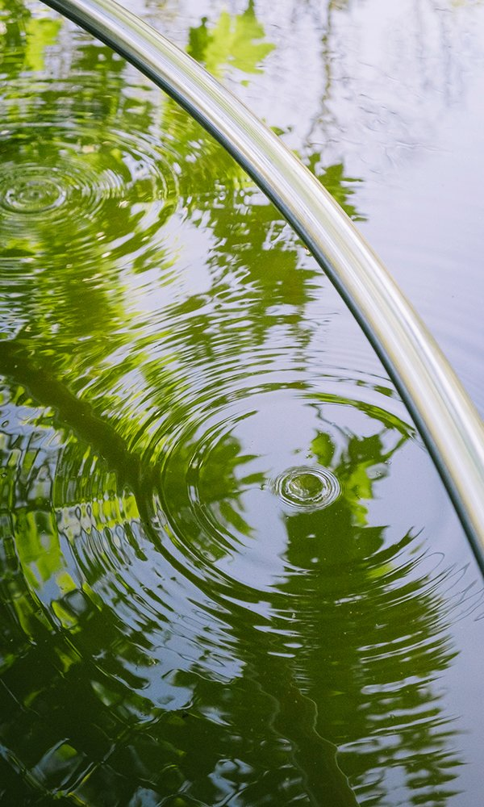
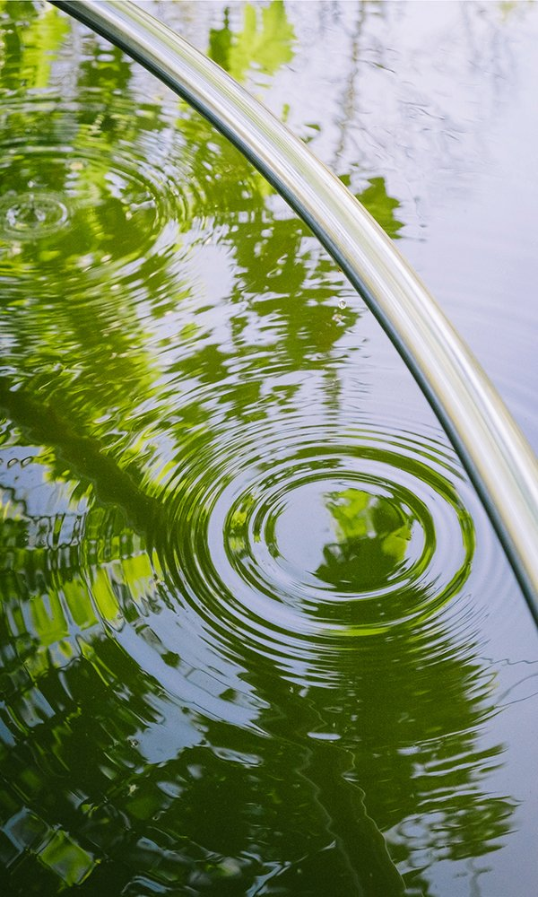
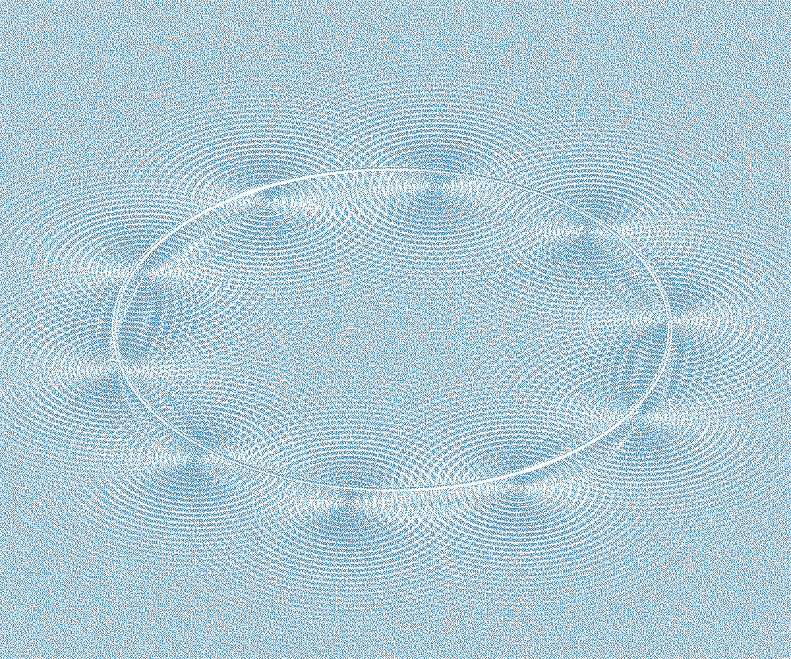

"O" INSTALLATION






"O" is an inverted fountain that creates regular, concentric ripples on the water. As they spread, the waves meet and reveal a vibrant, ever-changing pattern. The installation was set up in the lake of the Maison Blanche park for the 14th edition of the Arts Éphémères. It is made of a mirror-polished stainless steel ring, self-regulating drippers and a solenoid valve.